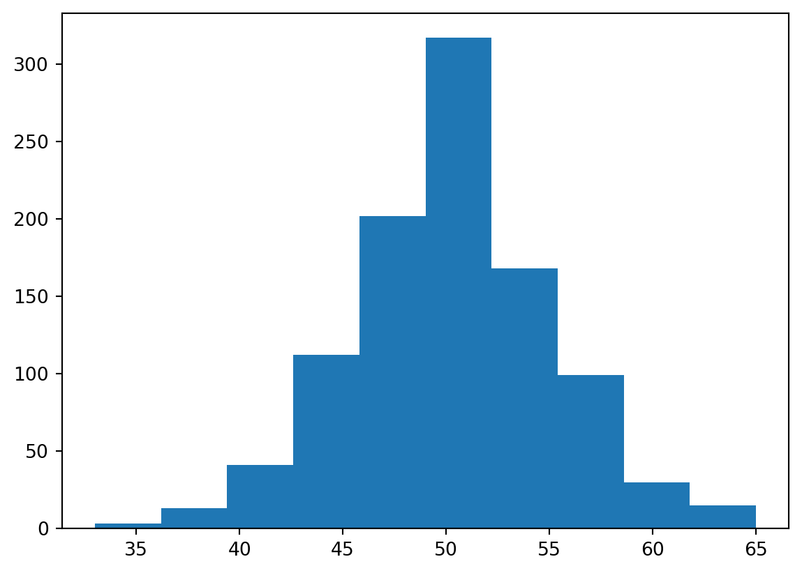
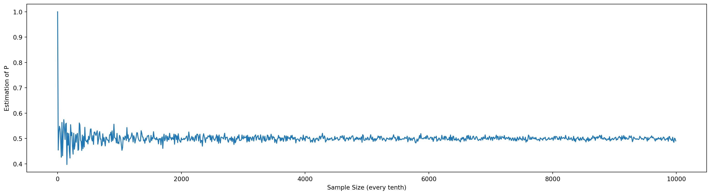
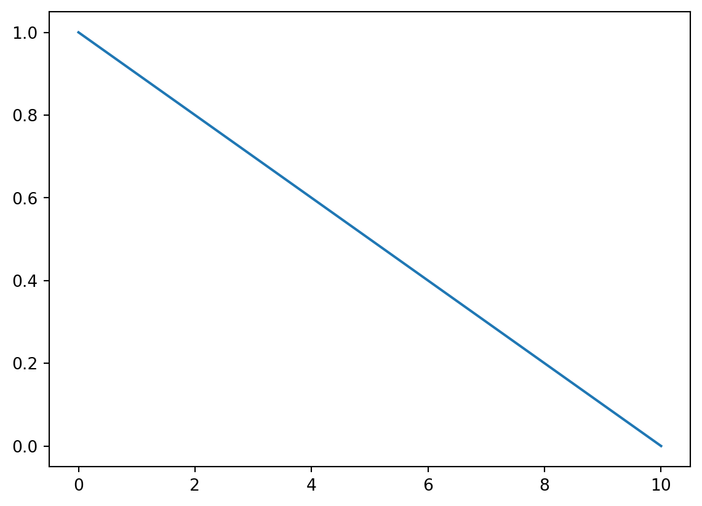

Number of heads in sample: 61Bayesian Inference
You can add options to executable code like this
#| echo: false
2 * 2The echo: false option disables the printing of code (only output is displayed).
Statistical Inference
Statistical inference is the process in which we make inferences (estimates) about a population or problem space when we only have a sub-sample of the total probable outcomes. In the vast majority of cases, we can never collect data for the entire population of the problem space but instead can only sample a subset.
For example, some classic problems would be estimating the average height of everyone on earth when we only have the heights of 200 people or determining what is the probability of loan defaults for all potential loan customers given that I have 200 customers and 2 have defaulted in the last year. Another example closer to home would be using the daily returns of a stock or futures contract form the last 2 years (our sample) to estimate the population of ALL possible daily returns - most likely used to model the returns of the stock on contract going forward in time.
There are broadly two main approaches to making estimates about a population given data from a sub-sample from the population, a frequentist approach and a Bayesian approach.
Frequestist Approach
First lets define frequentist statistics. A frequentist approach to statistics is concerned with calculating the long-run probability of an outcome or event. This is the method that you were taught in school involving a lot of math, probabilities and p-values. The implicit assumption that we’re making with this approach is that we have some ability to determine the long-run probability of an outcome. For example the long-run probability of getting heads on a coin toss would be 0.5 based on what we know about the mechanics of a coin toss. However, what if thought that the coin might not be a “fair” coin? How would we arrive at the probability of heads then if we had data on tosses of that coin?
A frequentist approach to solving this problem (also called frequentist inference) would be to create a hypothesis and test it.
https://www.google.com/url?sa=t&rct=j&q=&esrc=s&source=web&cd=&ved=2ahUKEwjRpbe58qH3AhWCM30KHaWkDREQFnoECBsQAw&url=https%3A%2F%2Fvault.hanover.edu%2F~altermattw%2Fcourses%2F220%2Freadings%2FStatistical_Inference.pdf&usg=AOvVaw1htPlxgll-9LxipNreRcQQ
First we’re going to generate a sequence of 100 coin tosses using an unfair coin.
Next we have to create a null hypothesis which in our case is that the coin is a fair coin toss. The alternative hypothesis is that the probablity of heads is greater than 50% and thus unfair.
h0: p = 0.5 # the null hypothesis that the coin is fair…
h1: p > 0.5 # the alternative hypothesis
The goal here is to accept or reject the null hypothesis by determining the odds of getting your result under the null hypothesis that the coin is fair.
Frequentist inference asks the question, what would be the likelihood of getting 61 heads on 100 coin tosses if the coin was fair? To do this, we’ll do the 100 tosses of the fair coin, 10,000 times to see how often we get 61 or more heads out of a hundred.
Flip 100 coins, 10000 times...
Number of heads for each sample of 100 tosses (first 20 samples):
[46 46 54 59 52 45 54 55 58 47 64 44 46 56 47 54 50 52 48 50]Now let’s determine how many times we got 61 heads or more…
probability of getting 61 heads or more: 1.83 %Then, because the odds of getting 61 heads or more on a fair coin is only 1.83%, I would reject the null hypothesis h0 that the coin is fair. This is your p-value, the odds of getting this result under the null hypothesis. Note that most statisticians reject the null hypothesis if the p-value is less than 5%. We also call the p-value you false-positive rate - if the coin was fair it would only show 61 heads (and that the coin was unfair) 1.83% of the time, causing you to reject the null hypothesis.
However, there are a number of issues with using this approach.
Issue #1: Just because the result is unlikely, doesn’t make it impossible
Remember, even with the fair coin, we still got 61 or more heads 1.83% of the time. Also, even an unfair coin can sometimes produce results that would be indicative of a fair coin…
Number of heads in sample: 57
probability of getting 57 heads or more: 10.08 %Even though we generated this sample using the same probability of heads of 0.6 as before, now we can’t reject the null hypothesis!
Issue #2: Picking the right hypothesises is hard
In the example above, just because we’ve rejected the null hypothesis, it doesn’t actually tell us what the true value of p is! For example another alternative hypothesis could be p < 0.5. While this is a simple example with only 3 possible outcomes for p, there are many real life examples where there are many possible explanations aside from the null hypothesis.
h0: p = 0.5
h1: p > 0.5
h2: p < 0.5
Number of heads in sample: 42
probability of getting 42 heads or more: 95.39 %
2.5th Percentile = 40.0 heads 97.5th Percentile = 60.0 heads
In this case, without knowing the answer which alternative hypothesis would you use? Also it’s bad practice just keep on testing various hypothesizes. This is because even with a result that shows a p-value of < 5%, this still means that you could randomly get a false-positive. The chance of getting a false-positive with a p-value of 5% on 20 tests is 100%! i.e. random chance alone will give you a false-positive if you just run enough tests…
probability of getting 49 heads or more: 62.57 %
probability of getting 49 heads or more: 62.57 %
probability of getting 51 heads or more: 46.45 %
probability of getting 52 heads or more: 38.84 %
probability of getting 58 heads or more: 6.91 %
probability of getting 44 heads or more: 90.3 %
probability of getting 47 heads or more: 75.92 %
probability of getting 57 heads or more: 10.08 %
probability of getting 48 heads or more: 69.7 %
probability of getting 42 heads or more: 95.39 %
probability of getting 46 heads or more: 81.77 %
probability of getting 49 heads or more: 62.57 %
probability of getting 50 heads or more: 54.58 %
probability of getting 48 heads or more: 69.7 %
probability of getting 52 heads or more: 38.84 %
probability of getting 57 heads or more: 10.08 %
probability of getting 51 heads or more: 46.45 %
probability of getting 45 heads or more: 86.56 %
probability of getting 61 heads or more: 1.83 %
probability of getting 47 heads or more: 75.92 %Delete this section
probability of getting 47 heads or more: 75.92 %
probability of getting 47 heads or less: 30.3 %probability of getting 5 heads or more: 100.0 %Number of heads in sample: 46array([60, 50, 49, 56, 51, 62, 50, 53, 52, 58, 50, 62, 45, 42, 52, 50, 47,
51, 49, 51, 54, 62, 51, 49, 52, 57, 47, 57, 59, 50, 46, 41, 39, 45,
54, 48, 46, 47, 53, 52, 45, 58, 45, 54, 53, 49, 49, 49, 49, 48, 45,
56, 47, 53, 53, 51, 55, 44, 60, 57, 46, 48, 52, 52, 56, 51, 44, 47,
50, 52, 51, 37, 52, 43, 53, 52, 54, 51, 44, 51, 56, 48, 46, 57, 51,
51, 47, 45, 53, 50, 41, 49, 51, 56, 59, 44, 46, 47, 58, 51, 44, 48,
54, 44, 48, 53, 56, 53, 45, 53, 50, 53, 54, 48, 53, 43, 44, 54, 49,
52, 50, 54, 50, 47, 39, 44, 54, 51, 57, 46, 50, 45, 46, 58, 52, 60,
49, 49, 54, 49, 49, 48, 47, 50, 47, 50, 49, 53, 48, 56, 53, 48, 50,
51, 47, 37, 49, 50, 42, 43, 44, 43, 53, 56, 50, 49, 51, 47, 49, 52,
44, 51, 51, 49, 43, 54, 45, 52, 45, 52, 45, 44, 56, 57, 49, 56, 61,
57, 45, 54, 55, 47, 45, 53, 54, 45, 52, 49, 55, 49])probability of getting 46 heads or more: 83.1 %0.0107421875(array([ 3., 13., 41., 112., 202., 317., 168., 99., 30., 15.]),
array([33. , 36.2, 39.4, 42.6, 45.8, 49. , 52.2, 55.4, 58.6, 61.8, 65. ]),
<BarContainer object of 10 artists>)
Trying to Determine the Long-run Probability Does Not Always Make Sense
In many classes of problems, the concept of a long-run probability doesn’t always make sense. For example what is the long-run probability that our Sun will go nova tomorrow? How knows? We only have one sun and it’s never gone nova before!
Issues
So in summary, some issues with using a frequentist approach is that:
- It does not tell you what the most likely answer is…
- It does not tell you if p=0.5 is wrong, just unlikely. You can still get 9 heads with p=0.5. This is your false positive rate.
- Long-run probabilities don’t always exist
Note that what we’ve done above is not the true way to calculate the p-value as most statistical methods use formulas to calculate it vs simulations.
That’s not to say a frequentist approach is bad and in fact bayesian inference converges to the frequentist approach with sufficiently large samples. However let’s now have a look at Bayesian Inference.
Bayesian Approach

https://www.sciencedirect.com/topics/neuroscience/statistical-inference
https://en.wikipedia.org/wiki/Frequentist_inference
https://www.redjournal.org/article/S0360-3016(21)03256-9/fulltext
https://corporatefinanceinstitute.com/resources/knowledge/other/hypothesis-testing/
http://sellsidehandbook.com/2018/12/09/statistical-inference-and-hypothesis-testing/
https://www.statisticshowto.com/frequentist-statistics/
Bayesian inference and Bayesian statistics in general is named after the statistician Thomas Bayes.
In contrast to the frequentist method, Bayesian inference is focused on the probability that something is true. It begins with a measure of belief in a particular model or number, then with the addition of data, this belief is updated to reflect this new data. In my opinion, it is a more intuitive and natural method for incorporating data into the analytical process.
Like above, let’s say we have a coin and we want to determine if it’s fair. First lets generate a sample of ten coin tosses:
array([1, 0, 1, 1, 1, 0, 1, 1, 1, 1])Based on this sequence, what is the most probable value of p? A bayesian approach would ask how often would this sequence of data occur if p was 0.5? If it was 0.6? If it was 0.7? etc. We can then use this information to determine the most likely value of p.
0.8Text(0, 0.5, 'Estimation of P')
Text(0, 0.5, 'Estimation of P')
